jenyoyo
close
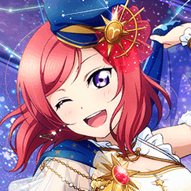constellation maki
my absolute dream card in sif. started when i really needed a pure ur and i love galaxy themes
status:
wanted
close
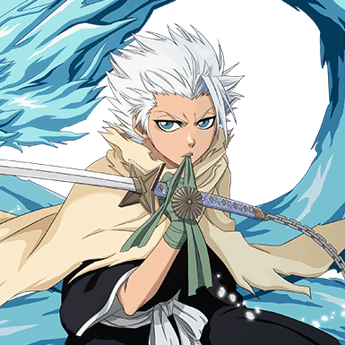diamond dust rebellion hitsugaya (movie 2)
seeing as the 2nd bleach movie plot was written because hitsugaya is such a popular character i was pretty sure he'd get a smAshing character for it and klab did not disappoint
status:
acquired
close
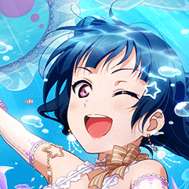jellyfish yohane
my favourite yohane in the game even though it's not my favourite set. underwater things!! are everything
status:
seal idolized on my en (side), wanted on my main
close
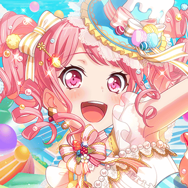dreamfest aya
sad story. but i'm not giving up. since she's returning every dream fest, i'll save most of my stars for these. one day!! she might come home
status:
wanted
close
thousand year blood war hitsugaya
my son, but older
status:
acquired
close
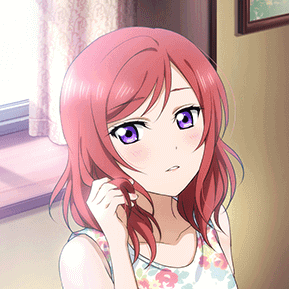initial maki
first maki ur i got! biased but the best initial μ's card
status:
acquired on both jp & en, don't plan on seal idolizing
close
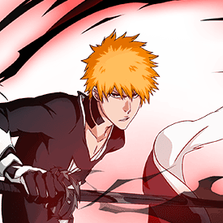fullbring ichigo
didn't blow me away as dangai ichigo did when i first saw him, but he's grown on me a lot, plus he StrOng
status:
acquired
close

pure yukina
this is such a blessed card cause it has my best girls number 2-4 on it, and i love rain, i love this card so much, I LOVE THis card
status:
acquired
close
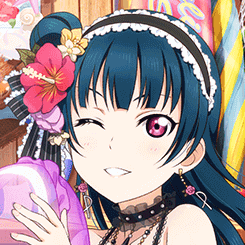swimsuit yohane SSR
meant to save for her first UR but this SSR stole my heart. accidentally pulled the hanamaru ur (which i love and keep save) before my friend finally pulled it while taking care of my account while i was at a festival. happiest girl with my watermelon girl
status:
acquired, double seal idolized
close
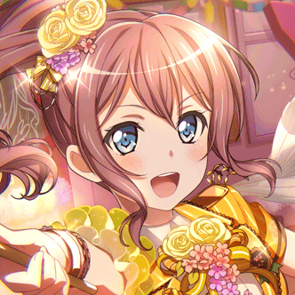initial saaya
tied with tae, saaya is my best popipa girl and one of my 5th best girls (too many girls tied for 5th place... save me). my sweet angel
status:
acquired
close
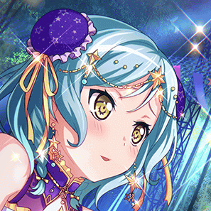happy hina
second best girl and constellation / greek mythology death theory themed??? this. this is my card. couldn't resist getting her with the 1st anniversary miracle ticket - and pulled the matching sayo on my mini tablet account on the same day!! coincidence?? i think nOT! ♥
status:
acquired
close
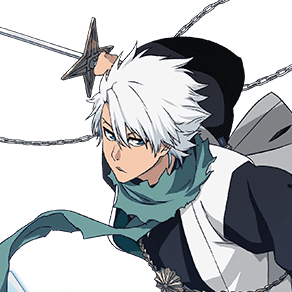fullbring hitsugaya
the toughest battle i've fought against the gacha gods. months of spending every orb on him but since july 17 i've actually pulled him 4 times now (even from brave souls tickets !!!) i love my icy tiny man
status:
acquired
close
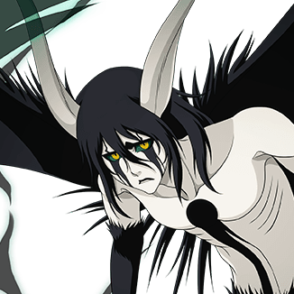ulquiorra segunda etapa vers. 2
everyone loves ulquiorra... got him right when he was out on the jp account i made for fullbring hitsugaya but don't play on that account cause starting is so much effort, so happy he's home on global
status:
acquired
close
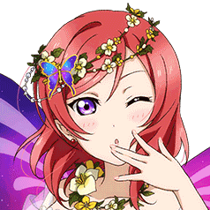fairy maki
fairy set was out soon after i started playing sif. had one pull and !!! got two!! seal idolization wasn't a thing yet so even sweeter back in the day. got her on my en side account as well from my very first blue or green ticket. a true love story
status:
acquired, idolized
close
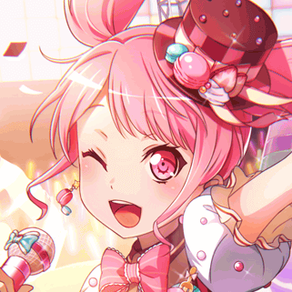initial aya
my precious girl, got her on my first pulls on both my accounts (tablet & phone), which is why i looked up what she's like and fell in love with her
status:
acquired
close
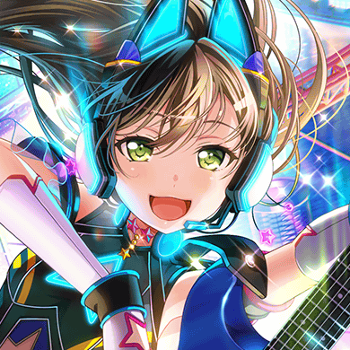dreamfest tae
my sweet angel my little rabbit love of my life thE OUTFIT IS BLINKING EVEN THE EARRINGS
status:
acquired
close
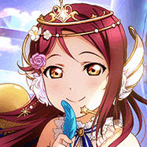angel riko
riko has blessed me so many times, and this card has become the first card of my first ever single account ur pair, so it's twice as precious to me
status:
acquired, plan to seal idolize
close
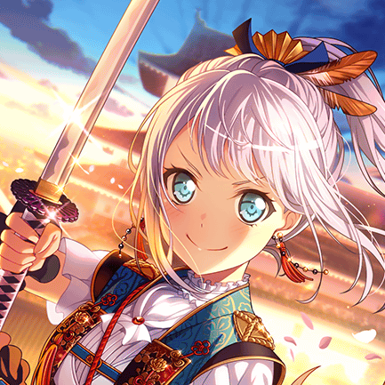bushido eve
BUSHIDOOOOOO! me, 1 week into playing bandori: i love characters with with hair and blue eyes
status:
acquired
close
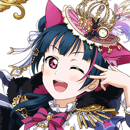cheshire yohane
alice in wonderland is one of my favourite stories, and when the second half dropped and i saw they turned my girl into a lil cheshire cat - one of my favourite characters - ... well i got her
status:
acquired, double seal idolized
close
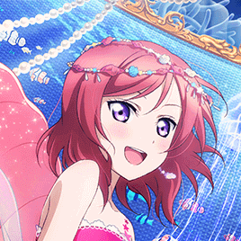mermaid maki
feel very connected to water things so obviously still hoping i'll turn into a mermaid one day. this card / set is so incredibly gorgeous... even if i don't have her, i'm glad she's out there
status:
wanted
close
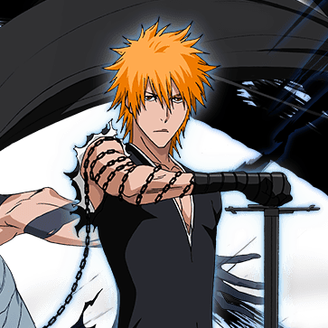dangai ichigo
one of my favourite characters in bbs and tied with tybw hitsugaya my favourite special. the fight against aizen is one of my favourites if not my absolute favourite - i fancy ridiculously op characters hgngh
status:
acquired
close
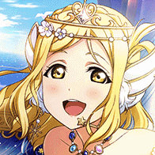angel mari
second card of my first single account ur pair, my first second copy idolized ur and such a gorgeous card. i love my guilty kiss girls loving me back
status:
acquired, idolized
close
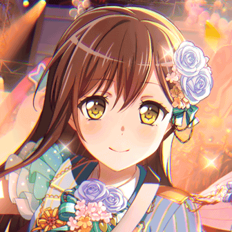initial tae
tae means a lot to me so i'm super happy someone had an en starter with her and lisa and rinko for me. rerolled for tae + aya but i fell in love with lisa a lot while doing that so i'm,,, v happy
status:
wanted on jp main, acquired on en main
close
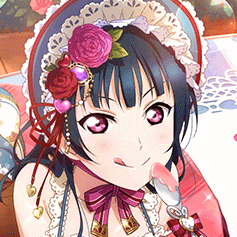valentine's yohane vers. 1
saving up in sif payed off for once! first yohane ur and first idolized ur. have mari on my en (side), hope i can complete the pair on either of my accounts some day. bonus points: i love valentine's sets so much
status:
acquired, seal idolized
close
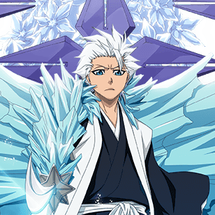original hitsugaya
even though he's outdated i'd love to have him some day
status:
wanted
close
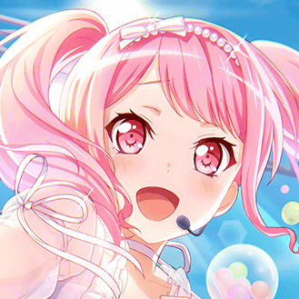powerful aya
came home on the last pull i had for her, makes my heart warm every time i see her. one of the most gorgeous cards
status:
acquired
close
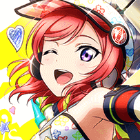crayon maki
pure makis will be the death of me and an ART themed one is the sweetest thing they could have given me. waiting for her to come home
status:
wanted
close
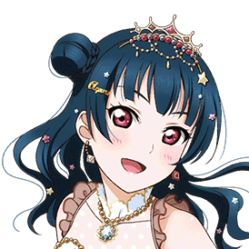valentine's yohane vers. 2
brought home by a nice man in rome who seemed to suffer a bit because he had no clue what he was doing but dear goodness it was so worth it
status:
acquired, double seal idolized
close

dreamfest sayo
while she wasn't who i was pulling for i was glad to at least get one of the limited cards, and the fact it was my 3rd best girl - something good came out of it
status:
acquired
close
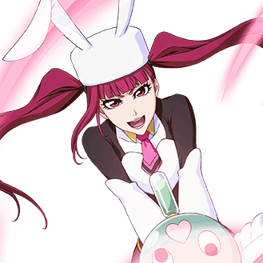riruka
not only is riruka one of my favourite characters, she fights with STUFFED ANIMALS and if that isn't reason enough to love her i honestly don't know. got her from a 4/5 star ticket!! incredible
status:
acquired
close
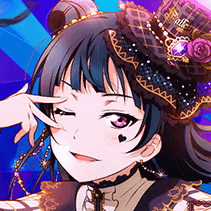halloween yohane vers. 1
reasons to love halloween: this card. that's all you need.
status:
acquired. seal idolized on en, plan to idolize on jp
close
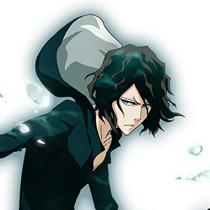tensa zangetsu
anything inside ichigo's inner world is very fascinating to me, and tensa is like the mini version of fullbring ichigo... very fun to play
status:
acquired
close
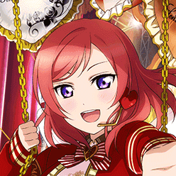valentine's maki
all pure makis are gifts from heaven and this one is no exception
status:
acuired, plan to seal idolize
close
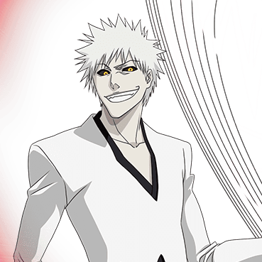original white ichigo
i love white ichigo and everything about him, his background. one of the first characters i pulled and first character i played properly!
status:
acquired
close
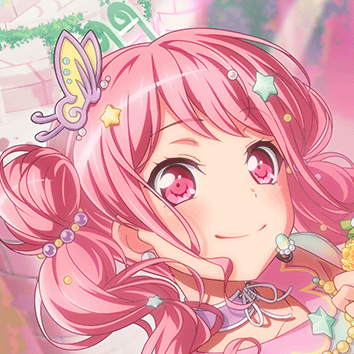spring aya
mended my broken heart after the limited aya tragedy when she came home on the second red ticket. such a precious girl (and glasses in the untrained version! aaaaaaaaaaaaa)
status:
acquired
close
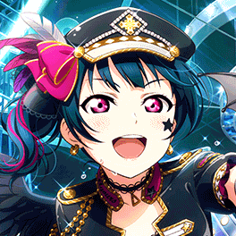rock / fallen angel yohane
they have tiny black wings and a rock theme and this is probably one of the best sets e v e r ----- it's the best girl pure ur combo; absolutely beautiful
status:
wanted
close
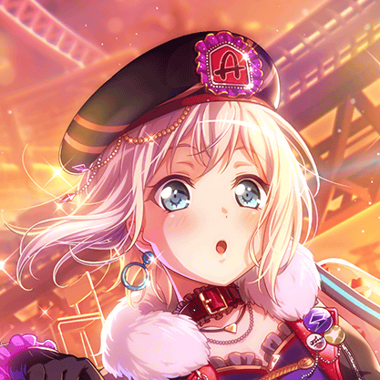dreamfest moca
"what!? you mean ... if yamabuki bakery is closed ... what happens to my bread?" - "that means no bread for you." - "... no ... anything but that..." - moca and ran
with her i've completed the following goals:
- 4* of every attribute
- 4* of every band
- full team of best girl 4*s
status:
acquired
close
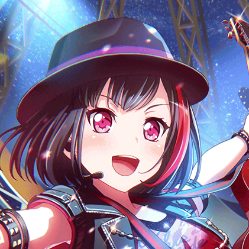constellation ran
picking a favourite out of ran's cards is tough but... this constellation set was so precious
status:
wanted
close
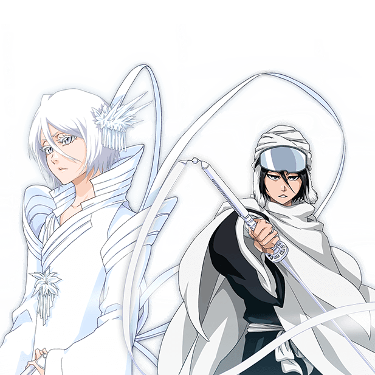thousand year blood war rukia
her normal attacks are so so pretty! i love rukia so much and this character is so wonderful.
status:
acquired
close
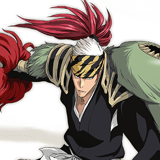thousand year blood war renji
i've always really liked renji (seeing as i love almost every character in bleach), but tybw made me like him even more... sweet angry man
status:
acquired
close
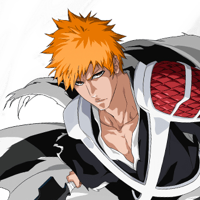thousand year blood war ichigo
cried actual tears when i first saw the special and that's probably enough information.
status:
wanted

home
hello!
i've put together a few pieces of information you might find useful if you've come across one of my accounts.
the only thing i'd really want you to know is that depending on the context sexual content can make me fairly uncomfortable;;
if there's anything you want me to tag for you i'd be happy to do so! you can leave a message on my tumblr if you'd like to stay anon, i don't use it currently but notifications are still on.
accounts
> twitter.com/jenyoyomain twitter, music etc.
> twitter.com/yoyohane
manga/anime/gacha game twitter
> twitter.com/kinddersee
art twitter (threads!)
> instagram.com/jenyoyo
art
> instagram.com/vecxrdia
private / personal
> 488nm.tumblr.com
art - inactive but might have a comeback this year
> jenyoyo.tumblr.com
personal - inactive but has occasional posts
> vecxrdia.tumblr.com
main, with a lot of dust, inactive, probably forever
> youtube
gacha games
- love live - school idol festival
- main: JP server
- side: EN server
- mini accounts: JP and EN on tablet (no URs)
- bang dream! girls band party
- main: JP server
- side: EN server
- mini accounts: JP and EN on tablet
- bleach brave souls
- main: global server
- mini account: JP server on tablet (for fullbring hitsugaya)
about me
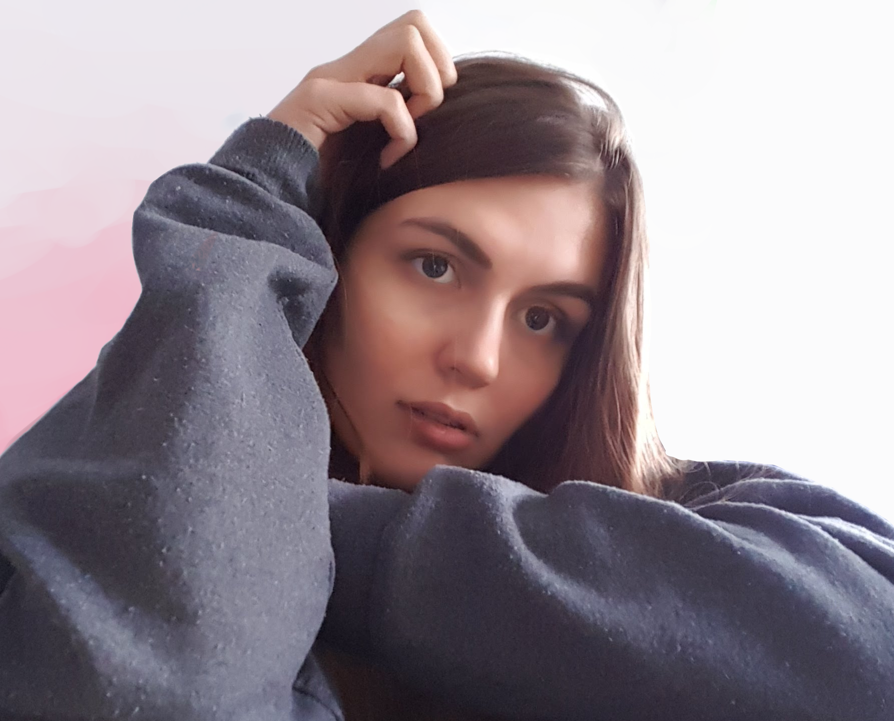- jenni, jen, yoyo...
- 20.07.1996
- german
- languages: german, english, some french & latin
- asexual spectrum
- female
- ravenclaw
- i love travelling to gigs (there's no gigs where i live so i kind of have to)
- i love swimming, used to do it regularly and v much want to get it back into my weekly routine
- i play guitar to get away with sitting in my room and singing when i'm alone
- i study computer science and enjoy most of it a lot
might softblock / unfollow if i see you hate on bands / artists / characters a lot. disliking is fine, saying something is bad and nobody should like it because you don't annoys me.
ko-fi?
putting this here just in case cause why not? if you want to support me financially / make my month, you can send me a ko-fi here. if you do, feel free to let me know for a little thank you doodle if you like that kind of thing? idk i'm just hoping for a rich generous person to pop along some day
favourites
music


- nothing but thieves
- local natives
- coldplay
- you me at six
- bastille
- & so many more... check the ♬ tab


fictional characters
- love live: μ's: maki, eli, umi
- love live: Aqours: yohane, you, kanan
- bleach: hitsugaya, ichigo
- bandori: aya, hina, sayo
- cheeky vampire: anju
- sailor moon: minako, michiru, hotaru
- harry potter: luna lovegood
 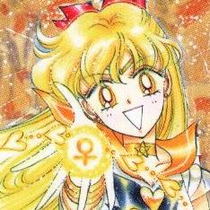
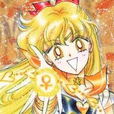
notes
The bright side of the planet moves towards darkness
And the cities are falling asleep, each in its hour,
And for me, now as then, it is too much.
There is too much world.
- czeslaw milosz, the seperate notebooks
worrying means you suffer twice
- newt scamander
we are like fireworks... rising, shining and finally scattering and fading.
so until that moment comes - when we vanish like fireworks...
let us sparkle brightly, always
- tite kubo, bleach chapter -12.5
- sif
- bandori
- bbs
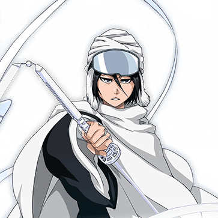
free
clean lines

introvert.


king of the couds

-
crosshatch

don't. run
oil

blooming
music insp
nothing but thieves

[again]st the wall

stuck


poison / cure

soda

though the record might spin, it's [all gone wrong]

afterlife x graveyard whistling
portraits
realistic

sohn
semi realistic

dom craik


conor mason
2d idols
love live!

maki.

yohane.
bandori

aya.
shows / movies
avatar - the last airbender

-the firebending masters i-
playlists
usually just put 353 albums in a playlist but with these i actually made some effort! maybe you find something you enjoy or just get a better idea of my music taste.
memories in the rain
some of my absolute favourite songs, mostly sad, the kind of songs i think of and feel like i can't continue breathing if i can't listen to it that very moment. (bit dramatic, i know.)
goodbye, halcyon days.
basically memories in the rain pt 2, but happier.
the perfect crimson
songs i really like singing along to.
alive and back here once again
bit longer than the rest. cheer up songs! songs that make me happy and help me cope / forget.
a star and a stray dog ~ 星と野良犬
nighttime
gate of the sun
sunshine songs
a day without melodies
how long you gonna sleep for, ichigo?
black moon rising
no, nothing can change my world
blooming under a cold moon
we are like fireworks... rising, shining and finally scattering and fading. so until that moment comes - when we vanish like fireworks... let us sparkle brightly, always - tite kubo, bleach chapter -12.5